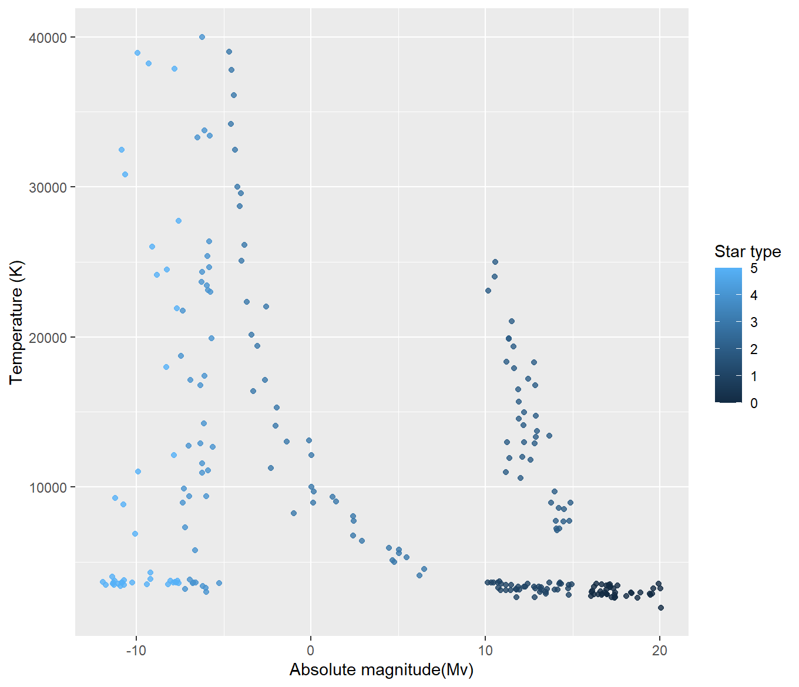
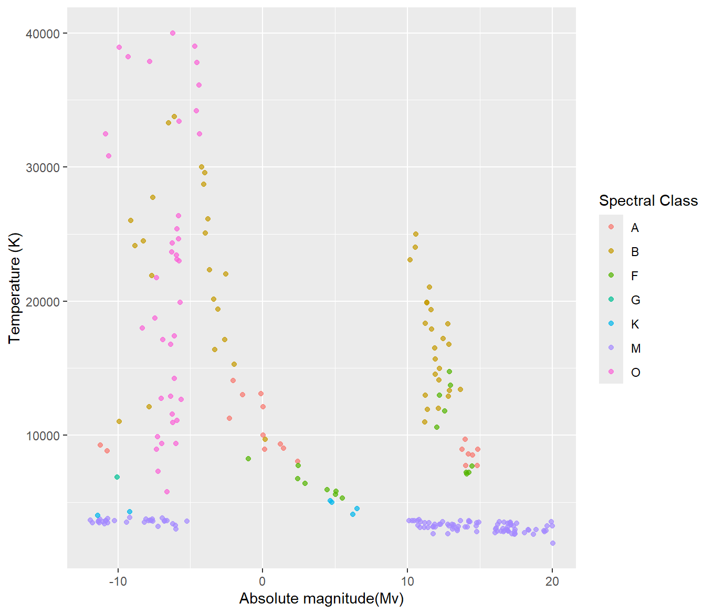
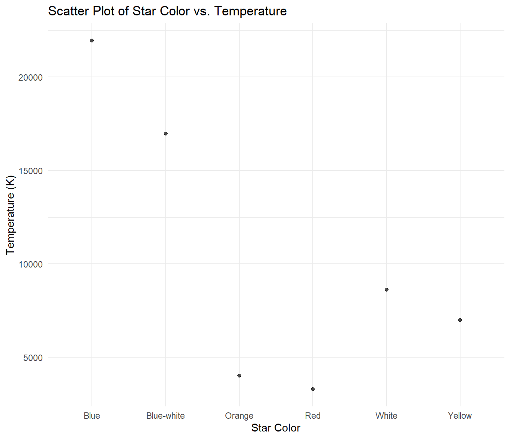
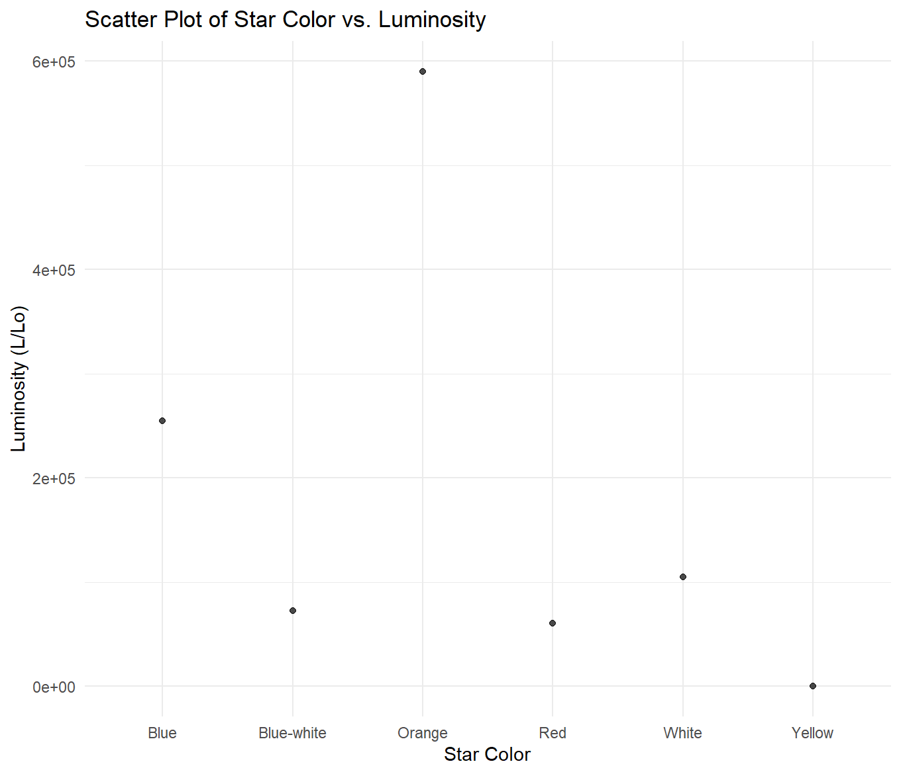
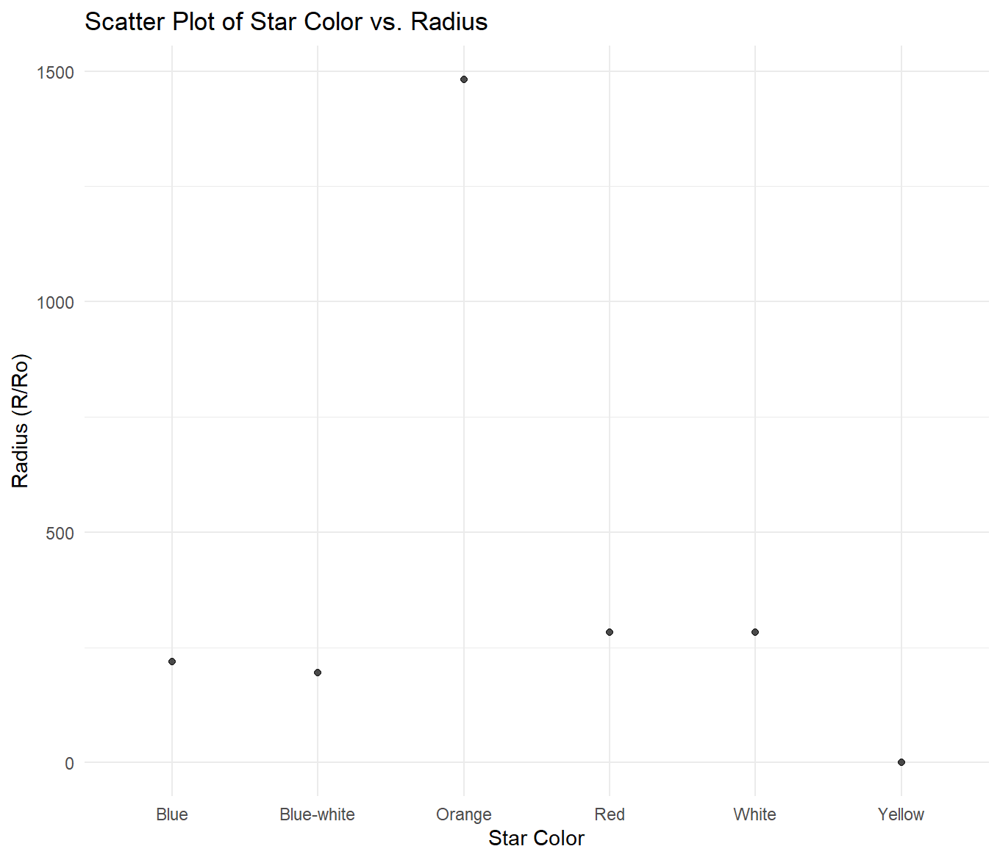
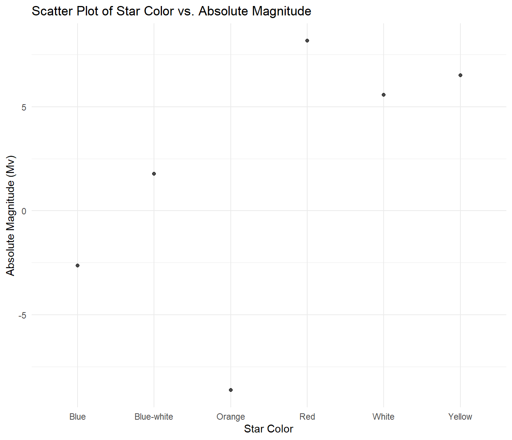
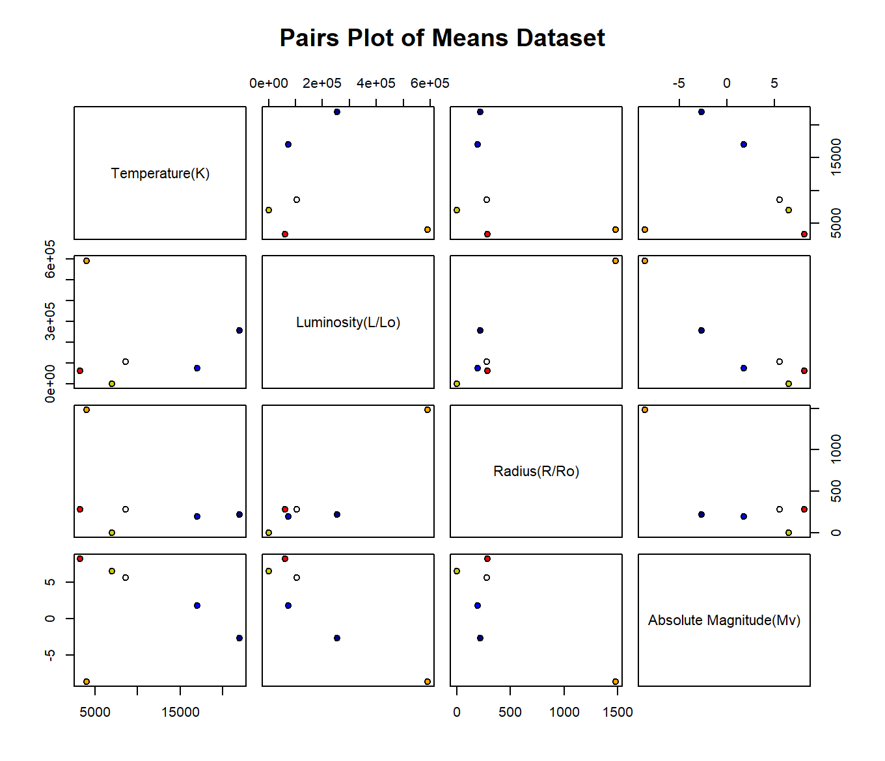
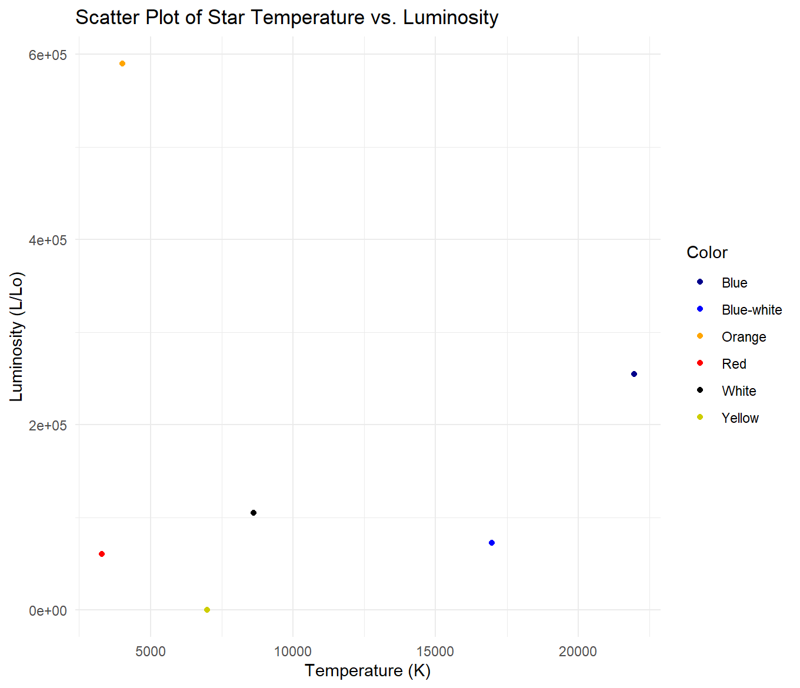
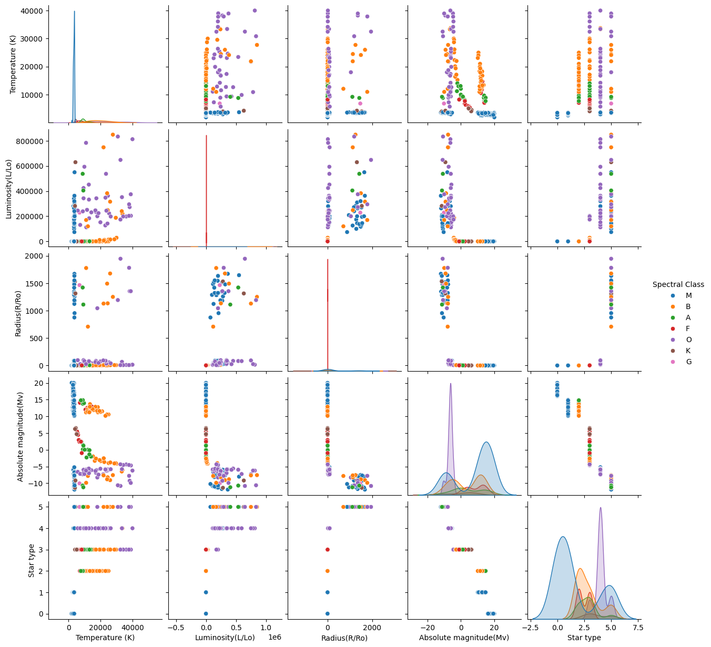

Analysis
Let's begin with graph analysis.
 These are two of the graphs that look a lot like the previously mentioned Hertzsprung-Russell Diagram. Based on the first graph, the lower ranked star types tend to have a higher magnitude, and the higher ranked star types tend to have a higher magnitude. The lowest and highest ranked star types also appear to have the lowest temperatures. There is a middle streak, or “main sequence” that appears to include the middle ranked star types. Looking at the second graph, M class stars appear to have either a very high magnitude or a very low one, and the lowest of the star temperatures. O class stars are varied in temperature but tend to have a consistently low magnitude. B class stars generally have medium temperatures, but vary across magnitudes. These are the main bunches and patterns that can be observed, but it is easy to see groupings amongst the types.
   For the above graphs, I created a new dataset of summary statistics for each star color. It held the mean of each variable per color group. Then, I compared the means of each variable across variables. Beginning with the star color vs. temperature graph, it can be observed that starting with the highest average temperature and moving to the lowest, stars are ranked as follows: blue, blue-white, white, yellow, orange, red. For star color vs. luminosity, they are ranked from highest average luminosity to lowest as orange, blue, white, blue-white, red, and yellow. For star color vs. radius, they are ranked from highest average radius to lowest as orange, red, white, blue, blue-white, and yellow. Lastly, in the graph depicting star color vs. magnitude, they are ranked from highest average magnitude to lowest as red, yellow, white, blue-white, blue, and orange.
 This paired matrix depicts a color coded point for each group of stars based on their star color. It uses the same dataset of means as the previous three graphs, setting the variable mean of a group of stars (based on star color) against other groups of stars. The second graph is a close up example of one of the pairs; on average, orange stars appear to have the highest luminosity and the lowest temperature compared to the other star color groups.
This is a plotly version of some of my visualizations. If you observe the plots, some seem to follow the Hertzsprung-Russell Diagram. There are also many bunches of stars based on spectral class.
Let's move on to model analysis.
My decision tree had an R squared value of 0.99909 when predicting spectral class using the variables luminosity, absolute magnitude, radius, temperature, star type, and star color, meaning it was incredibly accurate. I used 10% of the data for training and 90% for testing. I believe this extreme accuracy is due to overfitting, but I can’t be entirely sure. My random forest had an R squared value of 0.96461 when predicting spectral class using the same variables, meaning it was also incredibly accurate. I once again used 10% of the data for training and 90% for testing. After messing with the random forest model and changing the testing and training percentages quite a few times, I am slightly more confident (though not entirely certain) about the validity of its accuracy compared to the decision tree’s.
The true correlation between variables and spectral classification.
Now that we’ve seen all of these visualizations and observed the models, here is how spectral classification, star color, star type, luminosity, absolute magnitude, and temperature relate in an astrophysical sense.
1. Spectral Classes (Temperature and Color)
Stars are classified by their temperature and color, with hotter stars being blue and cooler stars being red.
| Spectral Class | Temperature | Color | Absolute Magnitude | Radius |
|---|---|---|---|---|
| O-type | 30,000 K+ | Blue | -5 to -7 | 10–50x Sun |
| B-type | 10,000–30,000 K | Blue | -2 to -4 | 3–15x Sun |
| A-type | 7,500–10,000 K | White | +0.1 to -1.5 | 1.5–2.5x Sun |
| F-type | 6,000–7,500 K | White | +1 to +2 | 1.2–2x Sun |
| G-type | 5,200–6,000 K | Yellow | +4.5 to +5.5 | ~1x Sun |
| K-type | 3,700–5,200 K | Orange | +5 to +8 | 0.7–1.2x Sun |
| M-type | 2,400–3,700 K | Red | +8 to +15 | 0.1–50x Sun |
2. Luminosity Classes (Size and Brightness)
Describes the size and luminosity (brightness) of a star:
| Luminosity Class | Description | Examples | Radius | Luminosity |
|---|---|---|---|---|
| I | Supergiants | Betelgeuse | 50–1,000x Sun | 1,000–100,000x Sun |
| II | Bright Giants | Aldebaran | 10–100x Sun | 100–1,000x Sun |
| III | Giants | Arcturus | 5–10x Sun | 10–100x Sun |
| IV | Subgiants | Alpha Centauri B | 1.5–2x Sun | 2–10x Sun |
| V | Main Sequence | Sun | 1x Sun | 1x Sun |
How These Classifications Work Together:
Spectral Class indicates the star's temperature and color, while Luminosity Class describes the star's size and luminosity.
Hotter stars (O, B types) are blue, while cooler stars (K, M types) are red. The absolute magnitude reflects a star's intrinsic brightness, and larger stars (supergiants) have higher luminosity. The radius of a star also correlates with its luminosity: the larger the star, the more luminous it tends to be.
Conclusion
Before exploring this topic, I didn’t know the ways in which the variables worked together, but I wanted to try and find out on my own. A lot of the visualizations I created support what is known about stellar classification, and for that I’m glad. There are also many things I wish I’d done differently, including finding a dataset with more observations so I could create more concrete models. I also wish I had time to make more models besides just a decision tree and random forest, and maybe to have created more specific models based on smaller combinations of variables. For example, I could have made a model that uses just temperature and color to predict spectral class. Despite these faults with my project and process, I am happy to have had the opportunity to finally explore a type of data I’ve wanted to experiment with for such a long time; it was incredibly interesting and fun.